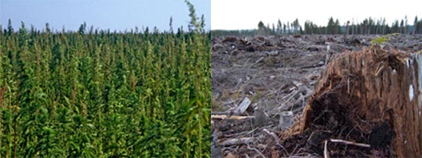

Welcome to Fibre Alternatives and the "New Forest"
Since the first human ancestor pulled some tree branches together to form a shelter, humanity has depended on wood as the primary material used for building all types of structures. When trees were many, and people were few, this was a sustainable situation — today, it's a receipe for disaster.
The world’s forests are Earth’s biggest carbon sinks after the oceans. If we keep taking trees, wood and fiber from them at the current rate, there will be no way to stop the currrent rise in carbon dioxide production and increased global warming.
The average composite mill uses 500-1500 tons of fiber 300+ days per year. There are thousands of these mills all over the world, with more coming online daily, and the demand for fiber to feed them will only increase.
If grown and harvested properly, Hemp can be used in these mills today.
Trees can take hundreds of years to mature, but hemp takes only about 120 days per crop. Clearly, it makes more sense to produce a house (which may last for just 25 to 75 years) from hemp raher than wood. In the long run, using trees to make houses is a loosing proposition
Throughout history, every time a civilization has destroyed its available forest lands, it has fallen. At Fibre Alternatives, we believe that alternate fiber sources, particularly hemp, can not only replace wood fiber as a primary construction component, but can also change agricultural practices, replace chemical fertilizers, and ensure the long term viability of the world's crop lands. Fields of fiber crops, often grown on secondary or tertiary quality land, can become the "new forest" needed to sustain humanity through the 21st century and beyond.
Why Use Hemp?
Why does Fibre Alternatives take on the legal and social challenges associated with using and promoting industrial hemp as a primary fiber source? After investigating all available fiber crops, the hemp plant's clear superiority and versatility set it apart from all other fiber sources, and its ecological benefits are unequaled by any other fiber crop. Hemp farming can not only provide us with a stable, renewable fiber source, its production and by-products can help restore and preserve essential crop lands.
Although the individuals connected with Fibre Alternatives acknowledge the many diverse uses and applications of the Cannabis plant to benefit humanity, Fibre Alternatives is focused on industrial applications where hemp, substituting for non-renewable or exhausted raw materials sources, can be used to take control of major environmental/economic issues such as forest destruction, soil degradation, global warming, and economic collapse which currently confront humanity.
The statement below, created as a mission statement for an earlier incarnation of Fibre Alternatives, expresses our belief in, and hopes for, the future uses of hemp.
The Hemp Manifesto
We hereby declare that the Earth’s entire ecology, market, and politics be consciously manipulated through the widespread application and use of the plant Cannabis Sativa. That all agricultural and forest management techniques that have led to the damaging of the environment through the use of toxic chemicals and gross harvesting processes be immediately ended and substituted in their place nontoxic, easily renewable, hemp based industries. These industries will simultaneously renew local and international economies of all countries while allowing their respective environments and ecologies to rebound and re-harmonize themselves with the planetary nature.
For background on hemp’s economic potential, please see the article in our Education-Links section written by Wm. Conde entitled "Hemp Is The Ultimate Cash Crop".